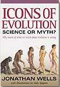

Íconos de la Evolución Humana

El libro Íconos de la Evolución de Jonathan Wells argumenta que muchos de los argumentos más comúnmente aceptados sobre la validez de la evolución son inválidos. Wells aborda el tema de la evolución humana en el Capítulo 11, "Del Simio al Humano: El Ícono Supremo".
El título es sin duda una referencia a la "Marcha del Progreso", una de las imágenes visuales más reconocibles de nuestra cultura. Este famoso dibujo muestra una secuencia de primates caminando de izquierda a derecha, comenzando con un pequeño simio que se apoya en las articulaciones de los nudillos a la izquierda, pasando por una serie de homínidos y terminando con un hombre Cro-Magnon moderno a la derecha. La versión original de este dibujo se publicó en el libro de Time-Life Early Man en 1970 y fue dibujado por Rudy Zallinger, pero desde entonces ha sido copiado, modificado y parodiado sin fin. De hecho, una versión de este dibujo adorna la portada del propio libro de Wells, y Wells lo describe como el "icono definitivo" de la evolución.
En el sitio web creado para promocionar el libro de Wells (http://www.iconsofevolution.com/), Wells dice:
Cuando se les pide que enumeren la evidencia de la evolución darwiniana, la mayoría de las personas, incluidos la mayoría de los biólogos, dan el mismo conjunto de ejemplos, porque todos han aprendido biología de los mismos pocos libros de texto. Los ejemplos más comunes son:
- [otros elementos de la lista omitidos...]
- ilustraciones de criaturas similares a los simios evolucionando hacia humanos, mostrando que somos simplemente animales y que nuestra existencia es meramente un subproducto de causas naturales sin propósito.
El Capítulo 11 de Well consiste principalmente en una recopilación de todo el material que puede encontrar, que enfatiza la incertidumbre y las desconocidas en el estudio de la evolución humana. Hay discusiones sobre el fraude de Piltdown (¿qué libro creacionista estaría completo sin uno?), si la paleoantropología es ciencia o mito, qué pueden mostrarnos los fósiles, etc., todo ilustrado con citas de científicos.
El análisis de Wells sobre el libro de 1863 de Thomas Huxley Evidence as to Man's Place in Nature señala que, dado que no existía evidencia fósil conocida sobre la evolución humana en ese momento, Huxley comparó esqueletos humanos y de mono para mostrar su estrecha similitud. Es difícil ver algo particularmente ofensivo en esto, pero para Wells "Lo que muestra la ilustración de Huxley es que, desde el principio, el icono de mono a humano fue simplemente una reformulación de la filosofía materialista".
Wells, como muchos creacionistas, parece creer obviamente que la evolución es una "filosofía materialista". Pero la evolución, como cualquier teoría científica, simplemente intenta encontrar explicaciones naturales para el mundo natural. Si uno elige creer que "nuestra existencia es meramente un subproducto de causas naturales sin propósito", eso depende de las creencias religiosas del individuo. Ciertamente no se implica por la evolución, como debería ser obvio por el hecho de que muchos científicos son teístas.
La sección que discute a Huxley se titula Encontrar evidencia que encaje con la teoría. De nuevo, es difícil ver cuál es el problema con esto, ya que a los científicos se les supone que encuentren evidencia para sus teorías.
En el momento del descubrimiento del Hombre de Piltdown (1912), Wells dice que no había evidencia de la evolución humana, ya que el estatus del fósil de Java Man de Eugene Dubois como un intermedio entre simio/humano estaba ampliamente disputado. Eso no es exactamente cierto. La interpretación precisa de Dubois estaba ampliamente disputada, pero como señaló Marcellin Boule en su libro de 1923 Hombre Fósil,
Estas diferencias de opinión son más aparentes que reales. Aquellos que creen en el carácter simio de Pithecanthropus realmente lo consideran un simio superior a todos los simios vivos, y aquellos que creen en su carácter humano lo consideran inferior a todos los hombres conocidos, vivos o fósiles. Dondequiera que coloquemos el fósil de Trinil, según sus caracteres morfológicos, en la serie entre Simio y Hombre, como en: P, P', P'',Simio.......P........P'........P''........Hombre
El hecho permanece de que en todos sus caracteres conocidos para nosotros, este fósil ocupa una posición intermedia, o si se prefiere la exactitud terminológica, una posición intercalada. Este es un hecho positivo admitido por todos los naturalistas competentes.
El juicio de Boule sigue siendo válido, excepto que, con el beneficio de mucho más estudio y evidencia fósil, los científicos modernos pueden ahora atribuir al Hombre de Java a la especie Homo erectus, y lo ubicarían en la posición P'' en la serie de Boule (es decir, intermedio, pero más cercano a los humanos que a los simios). Este fósil es solo un ejemplo de una considerable cantidad de evidencia fósil que Wells ignora.
Un escritor citado por Wells es Henry Gee, un editor de la revista científica Nature, sobre las dificultades para reconstruir linajes de ancestros/descendientes dada la naturaleza fragmentaria del registro fósil y los largos períodos de tiempo involucrados. Gee ha lamentado que la cita selectiva de Wells distorsione sus puntos de vista. Aunque ha argumentado efectivamente que algunos científicos son culpables de narrar historias y construir escenarios que van más allá de lo que puede ser soportado por la evidencia fósil, Gee señala que esto no significa que no existan fósiles que exhiban estructuras transicionales, ni que sea imposible reconstruir lo que ocurrió en la evolución.
Wells también cita a Gee diciendo que toda la evidencia de la evolución humana "entre aproximadamente 10 y 5 millones de años atrás - varios miles de generaciones de seres vivos - puede caber en una caja pequeña". Cierto, pero hay mucha más evidencia para el rango más relevante de 0 a 5 millones de años, que es cuando ocurrió casi toda la evolución humana. Es una ilustración vívida de cómo Wells solo está interesado en centrarse en donde falta la evidencia, y nunca en donde está presente.
Como ejemplo de la fiabilidad de las impresiones de los artistas, Wells menciona la edición de marzo de 2000 de National Geographic, que mostraba dibujos realizados por cuatro artistas basados en el mismo conjunto de huesos. Después de describir las considerables diferencias entre ellos, Wells añade:
"No sorpresivamente, el fuertemente pro-Darwin National Geographic enterró estos reveladores dibujos en una página sin numeración entre los anuncios al final de la revista."
Venga, vamos a ser serios. Si quieres ocultar algo, no lo publicas en una revista con una distribución mundial de más de 8 millones de ejemplares al mes, ni siquiera en las páginas de atrás. Estaba en las páginas de atrás precisamente por la razón indicada por NG: estaban dando a los lectores una vista previa de un proyecto inminente.
De acuerdo, aceptemos que las reconstrucciones artísticas son de dudosa precisión. ¿Y entonces qué? Los científicos ciertamente no dependen de tales reconstrucciones para realizar sus estudios, y se espera que nunca se utilicen como evidencia, incluso en los libros de texto, sino meramente como ilustración. No veo por qué esto sea más reprobable que las imágenes de dinosaurios que son omnipresentes en nuestra cultura y que también implican considerable conjetura.
Wells también menciona el caso del cráneo fósil ER 1470, cuya apariencia difiere según el ángulo desde el cual se elige conectar la cara con el resto del cráneo. Parece que Wells solo está interesado en detenerse en las ambigüedades, y no en lo que se puede determinar a partir de este u otros fósiles. En el caso del 1470, por ejemplo, podemos saber que la caja craneal es mucho más grande y tiene un aspecto más moderno que la de cualquier simio, pero aún mucho más pequeña que la de todos los humanos modernos, salvo los más patológicos.
Una sección titulada "¿Qué SABEMOS sobre los orígenes humanos?" discute diversas controversias sobre los neandertales, el debate Fuera de África/Multirregionalismo, y la falta de consenso o de una teoría abarcadora entre los científicos sobre los orígenes humanos. La declaración de Wells de que
"El público en general rara vez es informado sobre la profunda incertidumbre respecto al origen humano que se refleja en estas declaraciones de expertos científicos. En su lugar, simplemente se nos sirve la última versión de la teoría de alguien, sin que nos digan que los paleoantropólogos mismos no están de acuerdo con ella"
es un gran estiramiento, dado que los debates sobre estos temas han sido ampliamente cubiertos en los medios populares. (De hecho, los medios parecen deleitarse al informar sobre los a menudo acerbos debates sobre el origen humano.) Como de costumbre, los argumentos de Wells demuestran que no sabemos todo sobre la evolución humana (verdadero), mientras que intentan dejar la impresión de que no sabemos nada sobre ella (falso).
En la sección final de su capítulo, titulado Conceptos disfrazados de descripciones neutrales de la naturaleza, Wells cita a Michael Ruse, un conocido filósofo de la ciencia y un ardiente evolucionista, diciendo:
"Si la gente quiere hacer una religión de la evolución, eso es su asunto," escribió Ruse, pero "deberíamos reconocer cuándo la gente va más allá de la ciencia estricta, moviéndose hacia afirmaciones morales y sociales, pensando en su teoría como una visión del mundo abarcadora. Demasiado a menudo, hay un deslizamiento de la ciencia hacia algo más."
Ruse objeta que, según sus propias palabras, "la evolución es promovida por sus practicantes como algo más que una mera ciencia. La evolución se promulga como una ideología, una religión secular". Ruse argumenta, y yo estoy de acuerdo, que quien haga esto debe tener cuidado de distinguir entre la ciencia y los puntos de vista filosóficos basados en la ciencia. Eso no significa, por supuesto, que la evolución en sí misma no sea científica, y Ruse es enfático al respecto de que sí lo es.
Por supuesto, Wells está de acuerdo en que tales puntos de vista filosóficos no deben enseñarse como si fueran ciencia. Sin embargo, esto no tiene mucho que ver con cómo se enseña actualmente la evolución, y específicamente la evolución humana, en los libros de texto. El único ejemplo de tal mal uso que da Wells es un libro de texto de biología (Biology, Raven y Johnson 1999) que incluye esta cita de una entrevista con el biólogo Stephen Jay Gould:
"Los humanos representan solo una pequeña rama, en gran parte fortuita y de aparición tardía, en el enorme arbusto de la vida."
Supongo que es la frase "casi puramente fortuita" la que Wells critica. Afirmablemente, esta opinión es más filosófica que científica (aunque también es discutible que no lo sea). Sin embargo, una frase en una cita dentro de una entrevista que es periférica al texto principal apenas parece merecer una reacción exagerada. No significa que el tratamiento de la evolución, o de la evolución humana, en ese libro de texto no sea preciso. Y ciertamente no significa que Wells esté justificado en tachar toda la ciencia de la evolución humana con su comentario final de que "esto no es ciencia, sino mito".
Dado que el subtítulo de Íconos de la Evolución es "Por qué gran parte de lo que enseñamos sobre la evolución es incorrecto", uno podría esperar naturalmente que su Capítulo 11 estuviera dedicado principalmente a discutir la evidencia actualmente aceptada sobre la evolución humana y mostrar por qué es inválida. El aspecto más sorprendente del Capítulo 11 es que no existe tal discusión! La evidencia fósil es casi totalmente ignorada (aunque Wells sintió que había espacio para unas cuantas páginas sobre el fraude de Piltdown, lo cual es totalmente irrelevante para el estudio moderno de los orígenes humanos).
Como creacionista, Wells presumiblemente no cree que los humanos hayan evolucionado, pero sería difícil descubrirlo a partir de este capítulo. Wells no disputa ninguna de las pruebas fósiles actualmente aceptadas, e incluso admite que:
"Se han encontrado muchos fósiles que parecen ser auténticos, y muchos de ellos tienen algunas características que son similares a las de los simios y otras que son similares a las de los humanos."
Démosle crédito donde corresponde: no es frecuente encontrar una declaración tan honesta como esa en la literatura creacionista.
Si los relatos de los libros de texto sobre la evolución humana son tan sesgados y subjetivos como parece pensar Wells, por supuesto que la solución es eliminar el sesgo. Sin embargo, Wells no presenta realmente ningún ejemplo de sesgo en los relatos de los libros de texto sobre la evolución humana. El resumen del sitio web del libro de Wells (citado arriba) sugiere que los libros de texto presentan la imagen de la "Marcha del Progreso" como evidencia de la evolución humana, pero Wells no da ningún ejemplo de libros de texto que incluso impriman la imagen, por no hablar de usarla como evidencia de que los humanos evolucionaron o de que "nuestra existencia es meramente un subproducto de causas naturales sin propósito" [1]. Yo también esperaría que los libros de texto no usaran la imagen de la Marcha del Progreso como evidencia, principalmente porque un dibujo especulativo no es evidencia (puedo estar de acuerdo con Wells en eso). Usar una imagen como evidencia sería doblemente tonto cuando hay tanta evidencia fósil real disponible.
¿Cuál es la evidencia fósil que Wells parece tan reacio a discutir?
- Existen muchos fósiles de australopitecinos, pertenecientes a muchas especies diferentes. Los tamaños cerebrales son similares a los de los simios, pero la mayoría de ellos eran bípedos.
- Los fósiles de Homo habilis son similares a los australopitecinos en muchos aspectos, pero también contienen características que los vinculan con los humanos
- Homo erectus (Hombre de Java, Hombre de Pekín, Niño de Turkana, etc.). Estos fósiles datan de aproximadamente 1,9 millones a 300.000 años de antigüedad. El cuerpo estaba completamente adaptado al bipedismo y era muy similar al de los humanos modernos, aunque más robusto. El cráneo, sin embargo, es reconociblemente diferente al de los humanos modernos, con grandes arcos superciliares, grandes mandíbulas y cerebros pequeños que van desde aproximadamente 750 cc hasta 1225 cc.
- Otros fósiles, clasificados de diversas maneras como Homo heidelbergensis o Homo sapiens arcaicos, son intermedios tanto en tiempo como en morfología entre Homo erectus y los Homo sapiens modernos (por ejemplo, Heidelberg, Kabwe, Petralona).
Enumerar ejemplos de sesgo y error o citas de científicos que señalan áreas de incertidumbre está bien y está bien, pero, precisamente, ¿cuál es el problema de Wells con la evidencia real? Nunca lo descubrimos. Presumiblemente, Wells no está feliz con la forma en que se enseña actualmente la evolución humana, pero no es en absoluto obvio qué cambios le gustaría realizar o cómo se puede explicar la evidencia fósil sin invocar alguna teoría de la evolución humana. Se puede estar de acuerdo con Wells en que el sesgo y la subjetividad han jugado un papel en el estudio de la evolución humana (y sin duda continúan haciéndolo), pero la situación parece estar mucho menos sombría de lo que Wells la pinta.
Aunque evita decirlo explícitamente, uno se lleva la impresión de que la solución preferida de Wells sería eliminar toda mención de la evolución humana de los libros de texto con el argumento de que es todo demasiado especulativo e insostenible. Pero si hay evidencia real, como Wells mismo admite que es el caso, seguramente el mejor curso de acción es presentar esa evidencia con la mayor precisión posible. Si Wells tiene ejemplos específicos de sesgo o error en los tratamientos de la evolución humana, o sugerencias para mejoras, entonces debería presentarlos. El hecho de que Wells no lo hiciera me hace sospechar que la mayoría de los libros de texto tratan la evolución humana con bastante precisión.
En resumen, este capítulo del libro de Wells es totalmente decepcionante. Antes de leer el capítulo, esperaba que hubiera algunas de las usuales afirmaciones creacionistas contra la evolución humana que refutar, pero resultó que prácticamente no había nada que necesitara ser refutado. Aunque el libro de Wells supuestamente refuta los ejemplos icónicos de evidencia para la evolución, en el caso de la evolución humana Wells ni siquiera sacude la evidencia, mucho menos la derrota. Asombrosamente, Wells ni siquiera intenta desacreditar ninguna de las evidencias actualmente aceptadas para la evolución humana [2]. Parece como si la evidencia para la evolución humana fuera demasiado fuerte para que Wells quisiera atacarla de frente y que en su lugar tuviera que recurrir a minarla. La ciencia de la evolución humana debe estar en bastante buena forma si este capítulo es el mejor ataque que Wells puede reunir contra ella.
Notas al pie
1. El Centro Nacional para la Educación en Ciencia, en una refutación del libro de Wells, cuestionó la afirmación del sitio web de Wells sobre "dibujos de criaturas similares a simios evolucionando hacia humanos, demostrando que somos simplemente animales y que nuestra existencia es meramente un subproducto de causas naturales sin propósito". Respondieron lo siguiente:
La idea de que dichos dibujos [de hombres-animales] se utilizan para "justificar afirmaciones materialistas" es ridícula y no se ve respaldada por un examen de los tratamientos de los libros de texto sobre la evolución humana. (NCSE, 2001)
En respuesta, Wells enumera tres libros de texto que dicen cosas como: los seres vivos se han desarrollado "simplemente por azar", "por un giro de los dados cósmicos", "la evolución funciona sin plan ni propósito" y "la evolución no está dirigida hacia un objetivo o estado final". Y, Wells añade,
"los tres libros de texto incluyen dibujos fantásticos de humanos similares a los simios que ayudan a convencer a los estudiantes de que no somos una excepción a la regla de la falta de propósito"
En otras palabras, Wells no pudo producir ninguna evidencia de que los dibujos de "hombres-animales" se estén utilizando para enseñar a los estudiantes que "nuestra existencia es meramente un subproducto de causas naturales sin propósito". Las declaraciones citadas no tienen ninguna conexión particular con las ilustraciones de hombres-animales, aparte de provenir de los mismos libros. Y aunque las declaraciones citadas como "la evolución funciona sin plan ni propósito" y "la evolución no está dirigida hacia un objetivo o estado final" no son necesariamente materialistas, no excluyen la posibilidad de un Dios que haya elegido utilizar o subvertir la evolución según su diseño; sin embargo, cualquier tal diseño no forma parte del proceso evolutivo; se impone desde fuera de la evolución y no debe, y no debería, formar parte de la teoría evolutiva.
Estas declaraciones no niegan la posibilidad de Dios; simplemente se niegan a defender la existencia de Dios, como Wells parece pensar que deberían. Pero tal defensa sería una opinión religiosa, no una científica, y debería ser excluida correctamente de los libros de texto. Volver al texto
2. No soy el único revisor que ha notado la extraordinaria debilidad del ataque de Wells a la evolución humana. Desde la reseña de Jerry Coyne de Íconos de la Evolución en Nature:
Al discutir otros 'iconos', Wells utiliza la misma táctica de omisión selectiva para distorsionar un cuerpo de literatura que finge revisar. No hay lugar donde esto sea más visible que en su capítulo sobre la evolución humana. Ante una serie de fósiles de homínidos que muestran transiciones desde rasgos similares a los de los simios hasta rasgos humanos modernos a lo largo de 4 millones de años, Wells solo puede balbucear sobre el fraude del Hombre de Piltdown e implicar que el vigoroso debate científico sobre el curso de la evolución humana prueba que los humanos no evolucionaron.
Larry Martin, en otra reseña, hizo el siguiente comentario:
Mientras hablamos de fósiles, ¿qué hay de la historia humana? ¿Qué son los australopitecos si no son los huesos de humanos primitivos? ¿Por qué no encontramos humanos modernos junto a ellos? Wells parece aceptar la evidencia fósil tal cual es y se conforma con señalar la confusión sobre los neandertales cuando fueron descubiertos por primera vez, o cómo las reconstrucciones varían respecto a cómo podría haber parecido un australopiteco en vida. Parece genuinamente incómodo respecto a qué debemos hacer con estos parientes de baja estatura y tíos microcéfalos adjuntos a nuestro árbol genealógico. ¿Deberían ser encerrados en el sótano para que los escolares no los vean? Encuentra su punto fuerte con el Hombre de Piltdown, una falsificación deliberada, pero su intento de resolver la historia humana en pequeñas disputas sobre unos pocos huesos antiguos no puede cambiar el esquema general de la evolución humana, que permanece intacto utilizando la evidencia que él permite.Volver al texto
Esta página es parte del FAQ sobre homínidos fósiles en el Archivo talk.origins.
Página de inicio |
Especies |
Fósiles |
Creacionismo |
Lectura |
Referencias
Ilustraciones |
Novedades |
Comentarios |
Búsqueda |
Enlaces |
Ficción
http://www.talkorigins.org/faqs/homs/iconshe.html, 03/31/2003
Copyright © Jim Foley
|| Envíame un correo electrónico